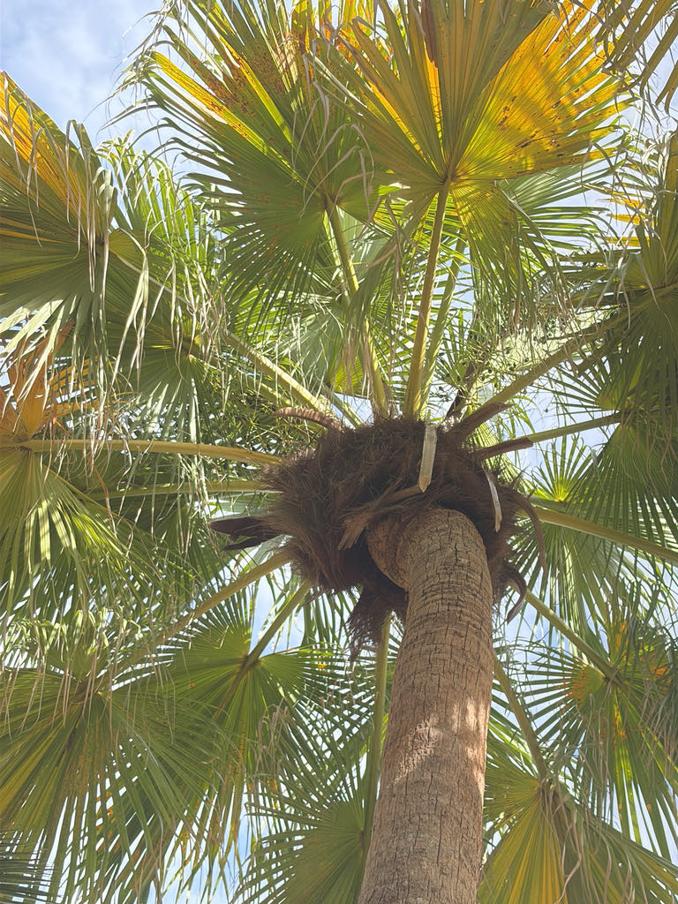

- This is the Florida state tree — the cabbage palm, found in every county in the state.
- The growing bud at its center is the original "swamp cabbage," or heart of palm, a regional delicacy.
- Harvesting that heart, though, kills the palm, since it is the single growing point the whole tree depends on.
- Its criss-crossed leaf bases ("boots") create perches and pockets that ferns, vines, and small animals colonize.
Native to the southeastern United States, throughout Florida and along the coastal plain. It grows in an exceptionally wide range of habitats — hammocks, marsh edges, dunes, and pine flatwoods — and tolerates salt, flooding, drought, and fire.
- The cabbage palm is Florida's state tree and arguably its most characteristic, growing from the Keys to the Panhandle and shrugging off salt spray, flooding, drought, hurricanes, and fire. That toughness comes from a single, protected growing point (the "heart" or terminal bud) buried at the top of the trunk.
- That heart is also the catch. Cut from the tree, the tender bud is the famous "swamp cabbage" or heart of palm — a Cracker Florida tradition still celebrated at festivals. But because a palm has only that one growing point, harvesting the heart kills the whole tree, which is why it is a treat to be taken thoughtfully and never from wild stands without care.
- Older trunks may keep their crisscrossing old leaf bases, called boots, or shed them to a smooth gray column. Either way the palm is a habitat in itself — boots and leaf crowns host ferns, vines, insects, and nesting birds.
- Two more notes worth knowing: it is one of the most hurricane-resistant trees in Florida, and it is the official state tree of two states — Florida and South Carolina, the "Palmetto State."
The big sprays of white flowers are a major nectar source for bees (the basis of prized palm honey) and many insects. The black fruits feed raccoons, birds, and other wildlife, and the leaf-base "boots" and crown shelter ferns, insects, bats, and nesting birds.
A single-trunked fan palm with a rounded crown of large, arching leaves.
Stout, gray, either smooth or covered in crisscrossing old leaf bases ("boots").
Long, branching sprays of small, fragrant, creamy-white flowers in summer.
Small, round, shiny black drupes in large hanging clusters.
Large costapalmate (fan-like with an arching midrib), giving the leaf a folded, curved look.
A classic fan palm with a single gray trunk and curved, fan-shaped leaves. The arching midrib that runs partway into the fan separates it from true fan palms.
The growing bud — swamp cabbage, or heart of palm — is edible and a Florida tradition, but harvesting it kills the palm. The small fruits are edible but bland.
It has no known toxicity to people or dogs.


- © Ruby Meador (CC-BY-NC), via iNaturalist
- © Randall Carter (CC-BY-NC), via iNaturalist